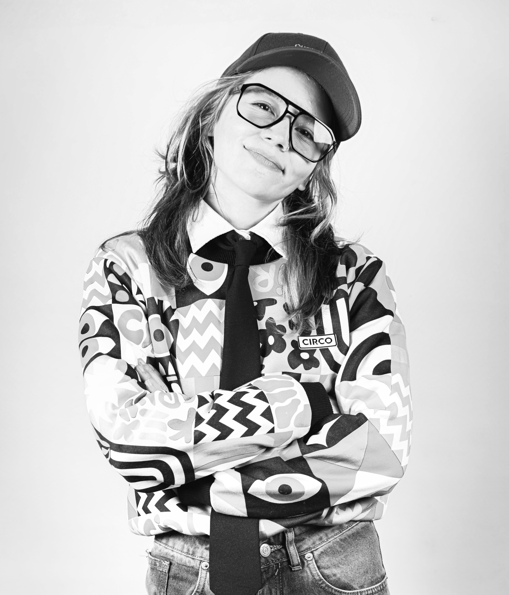

Escritore · Pedagoge social · Estudiante de psicología
Es la materia prima. Lo que hacemos juntes es convertirlo en lenguaje, en claridad, en camino.

"No es que no sabés qué hacer.
Es que todavía no encontraste cómo narrarlo."
Narrar el Caos — el universo
Acompaño a personas que sienten que el personaje que vienen siendo ya no las sostiene a escribir una versión más auténtica de sí mismas.
Narrar el Caos es el universo donde eso sucede: un espacio de escritura, metodología y acompañamiento para quienes están en ese momento bisagra donde lo que fueron ya no alcanza y lo que serán todavía no tiene nombre.
Uso la escritura como dispositivo de transformación. No como fin en sí misma, sino como herramienta para acceder a lo que somos.
El trabajo nació de una experiencia propia de reinvención radical: cambios de identidad, de género, de país, de rol. Lo que era caos personal se convirtió en metodología. Integra pedagogía social, psicología en formación, comunicación y escritura creativa.
No trabajo con fórmulas ni promesas rápidas. Trabajo con procesos que convierten el ruido en claridad, la historia en dirección.
Para quienes sienten que el personaje que vienen siendo ya no los sostiene
01
Hay ideas, saberes, recorridos acumulados. Pero algo se interpone entre saber y poder. El movimiento no aparece y la energía se gasta en círculos.
02
Lo que hacés ya no representa quiénes son. Están en transición, bloqueo o crisis. Y las fórmulas que encontraron afuera no terminaron de cerrar.
03
Hay una versión más auténtica que todavía no encontró su lugar. Quieren tomarse la vida como una creación y no saben por dónde empezar.
No es para quien
Busca resultados inmediatos, fórmulas de éxito rápido, recetas de productividad o promesas mágicas. Acá trabajamos con procesos reales que requieren tiempo y presencia.
Agos Concilio
Escritore · Pedagoge · Copy creativa
Sobre mí
Siempre supe que había algo que no cerraba. En el trabajo, en la identidad, en la forma en que el mundo nombra las cosas. No lo llamaba caos: lo llamaba yo.
Con el tiempo entendí que esa sensación de no encajar no era un defecto. Era una lente. Una forma de ver lo que otros no ven todavía. Y que de ahí podía nacer algo.
Narrar el Caos nació de esa experiencia: de hacer de la diferencia una herramienta, del desorden una pedagogía, del corrimiento un método. Hoy uso la escritura, la psicología y la pedagogía social para acompañar a personas que están en ese mismo punto de inflexión.
El proceso
Tres pilares que forman el universo y se retroalimentan entre sí
No enseño a escribir. Uso la escritura para que puedas nombrarte, reconocerte y animarte a dar el paso que ya sabés que tenés que dar. La escritura como herramienta de acceso a lo que somos.
No hay fórmulas universales. El proceso parte de tu historia, tu contexto y tu cuerpo. Trabajo entre lo emocional y lo estratégico, entre el deseo y la acción posible.
Acompaño desde adentro de la experiencia. Recorrí transformaciones radicales de identidad, de trabajo, de vida. No es teoría. Es metodología nacida del propio caos.
Acompañamiento individual
Para cuando ya no alcanza con pensar sole. Trabajamos sobre tu recorrido, tus bloqueos y lo que estás intentando armar. Un proceso personalizado para ordenar y traducir en algo concreto.
Cartas del Entre · mensual
Pensamientos en movimiento sobre identidad, deseo, crisis, trabajo y lo que aparece cuando algo deja de encajar. Una vez al mes, sin ruido. También en Substack.
Suscribirse → Ver asesorías →Podcast · Temporada 2 en producción
Un espacio para pensar en voz alta sobre existencialismos, tránsitos e identidad. La primera temporada está disponible en Spotify. La segunda temporada —con entrevistas a personas que reescribieron algo— viene pronto.
Escuchar en Spotify →Lo que pasa cuando te narrás
Lo que más me gustó fue la entrega y la predisposición de Agos. Se nota la pasión que tiene por lo que hace. En cada encuentro se percibía su energía, su compromiso y la forma en que pone todo de sí.
Un antes y un después en mi forma de mirarme, de crear y de confiar en mis propios procesos.
Con Agos sentí que podía abrirme, que podía contarle todo sin miedo. Es una persona con una luz enorme, con la que se puede construir cosas maravillosas. Tiene una manera muy especial de acompañar.
Me llevó la certeza de que yo tenía muchas de las cosas que buscaba, solo necesitaba mirarlas distinto. Me llevó el valor de mostrarme tal cual soy. En definitiva, me llevó una versión de mí mucho más consciente.
Quería aprender a desarrollar mi perfil profesional. Agos me ayudó a ver cómo relacionar mis estudios académicos con mi historia. Fue inquietante, movilizador y abrazador.
El acompañamiento fue hermoso. Me comprometido, inquietante, movilizador y abrazador. Gracias. Lo necesitaba.
Obra · Autoficción · Performance
Una novela sobre lo que pasa cuando una forma de amar, de pensar y de habitar el cuerpo deja de funcionar.
La primera edición fue completamente autogestionada: escritura, edición, preventa y una presentación performática con lecturas, proyecciones, audios, música y fragmentos intervenidos en el espacio.
Después del lanzamiento pasó algo que no esperaba. La gente se quedó mucho tiempo leyendo los fragmentos colgados en las paredes. Varias personas me hablaron de capítulos específicos que les quedaron resonando. Otras dijeron que la parte performática había quedado corta y que querían volver a entrar a ese universo.
"Creo que tienen razón. Porque en algún punto el proyecto dejó de sentirse solamente como un libro."
Contame en qué andás y vemos juntes qué forma puede tomar tu proceso.